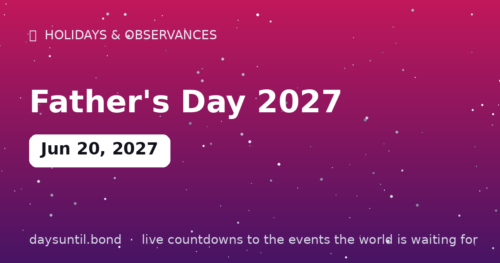

How Many Days Until Father's Day 2027?
Father's Day 2027 falls on Sunday, June 20, 2027.
As of October 23, 2026: 240 days to go — 34 weeks and 2 days, 170 weekdays (70 weekend days), about 5,760 hours.

Quick facts
| Date | Sunday, June 20, 2027 |
|---|---|
| Category | Holiday / observance |
About Father's Day 2027
Father's Day 2027 falls on Sunday, June 20, 2027. The third Sunday of June: ties, tools, barbecues and long phone calls. Father's Day was founded in 1910 and took 62 years to become a US national holiday.
The live counter above updates every second and automatically switches to 'days since' once the day arrives.
When is Father's Day 2027?
Father's Day 2027 in the United States, the United Kingdom and most countries that follow the American pattern falls on Sunday 20 June 2027 — the third Sunday of June. The rule is fixed: it is always the third Sunday, so the date moves between 15 and 21 June.
The Sunday placement is deliberate. Father's Day was designed as a day rather than a holiday, and keeping it on a Sunday means it can be observed without anyone needing the day off work.
Where the date comes from
The American version traces to Sonora Smart Dodd of Spokane, Washington, who proposed it in 1910 after hearing a Mother's Day sermon, and whose father had raised six children alone after his wife died. The first observance was in Spokane that June; the idea spread slowly and met considerable resistance along the way.
It took more than sixty years to become permanent: President Nixon signed it into law as a national holiday in 1972, more than fifty years after Mother's Day had been made official. Father's Day remains an observance rather than a federal public holiday in the United States — nothing closes.
Father's Day is on different dates around the world
The third Sunday of June is the most common pattern, but it is far from universal. In Spain, Italy and Portugal it is 19 March, the feast of St Joseph. In Germany it is Ascension Day, which doubles as a public holiday and a day for men to go walking with wagons of beer. In Australia and New Zealand it is the first Sunday of September, and in Brazil the second Sunday of August.
A few countries attach it to a person or an anniversary instead of a Sunday: Thailand marks it on 5 December, the late King Bhumibol's birthday, and Russia effectively celebrates it on 23 February, Defender of the Fatherland Day. If you are sending something abroad, check the local date first.
| Country | Father's Day | Basis |
|---|---|---|
| United States, UK, Canada | Third Sunday of June | Fixed rule |
| Australia, New Zealand | First Sunday of September | Fixed rule |
| Spain, Italy, Portugal | 19 March | Feast of St Joseph |
| Germany | Ascension Day | Movable, tied to Easter |
| Brazil | Second Sunday of August | Fixed rule |
| Thailand | 5 December | King Bhumibol's birthday |
Is Father's Day a public holiday?
No. Father's Day is not a federal public holiday in the United States, the United Kingdom or Canada, and nothing closes because of it. Because it always falls on a Sunday in most countries, the question rarely comes up.
The exception is Germany, where Father's Day coincides with Ascension Day and therefore is a public holiday — which is why the German version has a very different character, involving day trips rather than a family lunch.
What people actually buy
The commercial pattern is consistent and well documented: in the US and UK, Father's Day spending trails Mother's Day by a wide margin every year, with the gap usually somewhere between a quarter and a third. The most common categories are clothing, tools and garden equipment, alcohol, greeting cards and experiences rather than objects.
The persistent joke about ties and socks is not entirely unfair — novelty gifts and clothing dominate — but the fastest-growing category in recent years has been experiences: tickets, meals and activities, which is arguably closer to what the day was originally for.
Why it took so long to catch on
Father's Day faced real opposition in its first decades. Critics in the 1910s and 1920s argued it was a commercial invention, and there were attempts to replace it with a joint Parents' Day instead. The idea that greeting-card and retail interests drove its adoption was being made at the time, not invented later.
What changed was the Second World War: campaigns to honour servicemen gave the day a patriotic frame it had lacked, and after the war resistance faded quickly. It became law in 1972 largely because by then it was already widely observed.
The awkward bits
Worth saying plainly: Father's Day lands badly for a lot of people — anyone who has lost a father, anyone with a difficult relationship with theirs, and anyone who is a father to a child they cannot see. That is not a reason to cancel the day, but it is a reason not to assume everyone is celebrating.
It is also, like Mother's Day, a day that quietly assumes a particular family shape. Most people now know several family structures that it does not describe, which is why the generic 'happy Father's Day' greeting is best aimed carefully.
Father's Day in other years
Because it is the third Sunday of June, the date shifts by a few days each year. Here is the next three.
If you are planning something that needs booking — a restaurant, a trip, a ticket — note that the third Sunday of June sits inside peak wedding season in both the US and UK, so popular venues fill early.
| Year | Father's Day (US, UK) | Also |
|---|---|---|
| 2026 | 21 June | — |
| 2027 | 20 June | — |
| 2028 | 18 June | — |